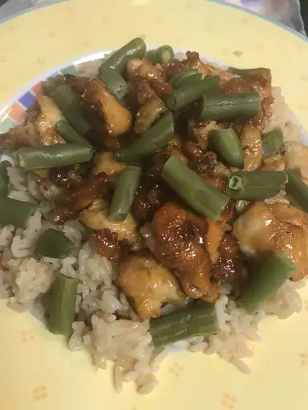

Description
This honey chicken recipe was given to me by a friend. I've used this recipe for years, and my family requests it often. It's a light meal that everyone will enjoy. Serve with steamed rice.
Ingredients
- 1/4 cup honey
- 2 tablespoons soy sauce
- 1/8 teaspoon red pepper flakes
- 1 1/2 tablespoons olive oil
- 2 skinless, boneless chicken breast halves, cut into bize-size pieces
Steps
- Whisk honey, soy sauce, and red pepper flakes in a bowl; set aside.
- Heat olive oil in a skillet over medium heat; cook and stir chicken in hot oil until lightly brown, about 5 minutes.
- Pour honey mixture into the skillet; continue to cook and stir until chicken is no longer pink in the center and sauce is thickened, about 5 minutes more.